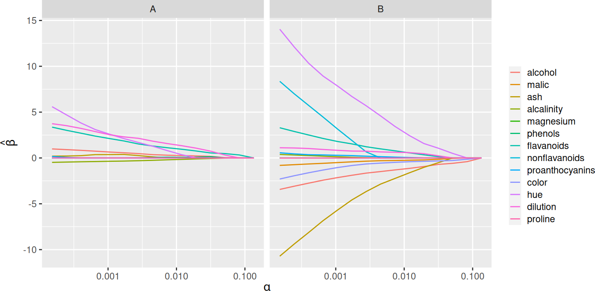
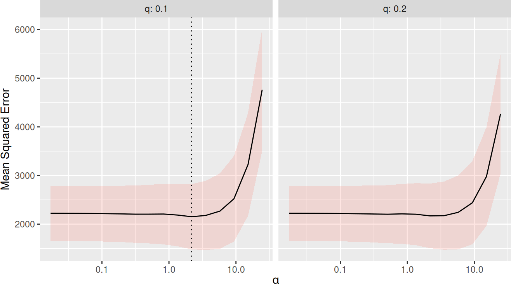

library(SLOPE)
fit <- SLOPE(wine$x, wine$y, family = "multinomial")SLOPE 0.2.0
r
regularization
SLOPE
statistics
A new update to the SLOPE package with many exciting features.
Introduction to SLOPE
SLOPE (Bogdan et al. 2015) stands for sorted L1 penalized estimation and is a generalization of OSCAR (Bondell and Reich 2008). As the name suggests, SLOPE is a type of \ell_1-regularization. More specifically, SLOPE fits generalized linear models regularized with the sorted \ell_1 norm. The objective in SLOPE is
\operatorname{minimize}\left\{ f(\beta) + J(\beta \mid \lambda)\right\},
where f(\beta) is typically the log-likelihood of some model in the family of generalized linear models and
J(\beta\mid \lambda) = \sum_{i=1}^p \lambda_i|\beta|_{(i)}
is the sorted \ell_1 norm.
Some people will note that this penalty is a generalization of the standard \ell_1 norm penalty1. As such, SLOPE is a type of sparse regression—just like the lasso. Unlike the lasso, however, SLOPE gracefully handles correlated features. Whereas the lasso often discards all but a few among a set of correlated features (Jia and Yu 2010), SLOPE instead clusters such features together by setting such clusters to have the same coefficient in absolut value.
SLOPE 0.2.0
SLOPE 0.2.0 is a new verison of the R package SLOPE featuring a range of improvements over the previous package. If you are completely new to the package, please start with the introductory vignette.
More model families
Previously, SLOPE only features ordinary least-squares regression. Now the package features logistic, Poisson, and multinomial regression on top of that. Just as in other similar packages, this is enabled simply by setting family = "binomial" for logistic regression, for instance.
Regularization path fitting
By default, SLOPE now fits a full regularization path instead of only a single penalty sequence at once. This behavior is now analogous with the default behavior in glmnet.
plot(fit)
Predictor screening rules
The package now uses predictor screening rules to vastly improve performance in the p \gg n domain. Screening rules are part of what makes other related packages such as glmnet so efficient. In SLOPE, we use a variant of the strong screening rules for the lasso (Tibshirani et al. 2012).
xy <- SLOPE:::randomProblem(100, 1000)
system.time({SLOPE(xy$x, xy$y, screen = TRUE)}) user system elapsed
1.888 0.005 0.294 system.time({SLOPE(xy$x, xy$y, screen = FALSE)}) user system elapsed
7.848 0.017 1.257 Cross-validation and caret
There is now a function trainSLOPE(), which can be used to run cross-validation for optimal selection of sigma and q. Here, we run 8-fold cross-validation repeated 5 times.
# 8-fold cross-validation repeated 5 times
tune <- trainSLOPE(
subset(mtcars, select = c("mpg", "drat", "wt")),
mtcars$hp,
q = c(0.1, 0.2),
number = 8,
repeats = 5
)
plot(tune)
In addition, the package now also features a function caretSLOPE() that can be used via the excellent caret package, which enables a swath of resampling methods and comparisons.
C++ and ADMM
All of the performance-critical code for SLOPE has been rewritten in C++. In addition, the package now features an ADMM solver for family = "gaussian", enabled by setting solver = "admm" in the call to SLOPE(). Preliminary testing shows that this solver is faster for many designs, particularly when there is high correlation among predictors.
Sparse design matrices
SLOPE now also allows sparse design matrcies of classes from the Matrix package.
And much more…
For a full list of changes, please see the changelog.
References
Bogdan, Małgorzata, Ewout van den Berg, Chiara Sabatti, Weijie Su, and Emmanuel J. Candès. 2015. “SLOPE – Adaptive Variable Selection via Convex Optimization.” The Annals of Applied Statistics 9 (3): 1103–40. https://doi.org/10.1214/15-AOAS842.
Bondell, Howard D., and Brian J. Reich. 2008. “Simultaneous Regression Shrinkage, Variable Selection, and Supervised Clustering of Predictors with OSCAR.” Biometrics 64 (1): 115–23. https://doi.org/10.1111/j.1541-0420.2007.00843.x.
Jia, J., and B. Yu. 2010. “On Model Selection Consistency of the Elastic Net When p >> n.” Statistica Sinica 20 (2): 595–611.
Tibshirani, Robert, Jacob Bien, Jerome Friedman, Trevor Hastie, Noah Simon, Jonathan Taylor, and Ryan J. Tibshirani. 2012. “Strong Rules for Discarding Predictors in Lasso-Type Problems.” Journal of the Royal Statistical Society. Series B: Statistical Methodology 74 (2): 245–66. https://doi.org/c4bb85.
Footnotes
Simply set \lambda_i = \lambda_j for all i,j \in \{1,\dots,p\} and you get the lasso penalty.↩︎